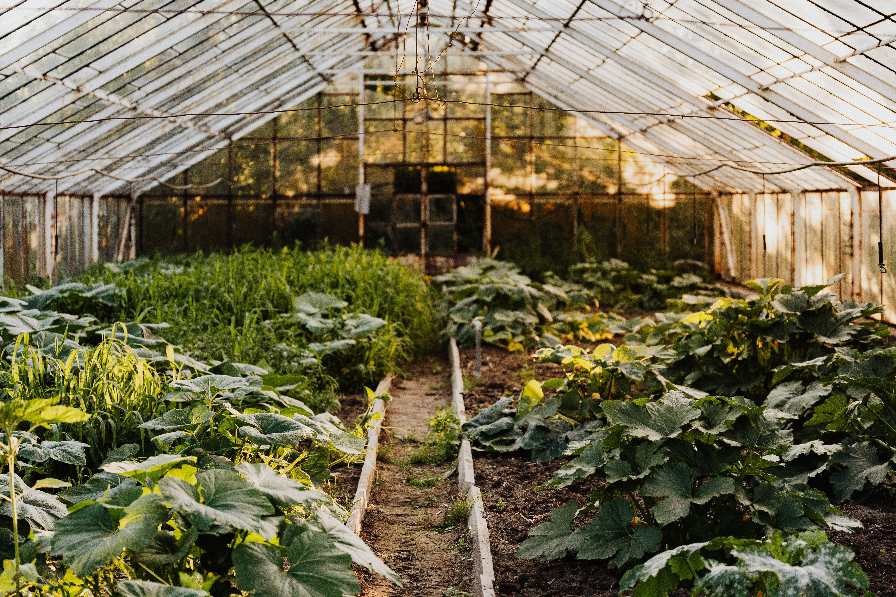

How to Grow Healthy Vegetables at Home

Growing vegetables at home is a simple and healthy activity. You do not need a large garden to grow fresh vegetables. You can grow them in your backyard, balcony, or small pots.
1. Choose the Right Vegetables
Start with easy vegetables like tomatoes, spinach, green chilies, and coriander. Choose vegetables according to your available space and weather.
2. Select Good Soil
Healthy soil is important for growing vegetables. Use good quality soil mixed with compost. It provides nutrients and helps plant roots grow properly.
3. Choose a Sunny Place
Most vegetables need sunlight to grow well. Place your plants in an area that receives around 5 to 6 hours of sunlight daily.
4. Use Suitable Pots
Choose pots according to the size of your vegetables. Make sure the pots have drainage holes at the bottom. This helps extra water flow out easily.
5. Water Your Plants Properly
Water your vegetables regularly according to their needs. Check the soil before watering. Avoid giving too much water because it can damage plant roots.
6. Use Natural Compost
Compost helps improve soil quality and provides nutrients to plants. You can use homemade compost made from vegetable peels and dry leaves.
7. Protect Plants from Insects
Check your vegetables regularly for insects and damaged leaves. Remove dry leaves and keep the growing area clean to help plants stay healthy.
Conclusion
Growing healthy vegetables at home is easy with proper care. Choose good soil, provide enough sunlight, water regularly, and protect your plants. These simple steps can help you enjoy fresh vegetables at home.
Useful Gardening Resources
Read more about growing vegetables from these gardening experts: